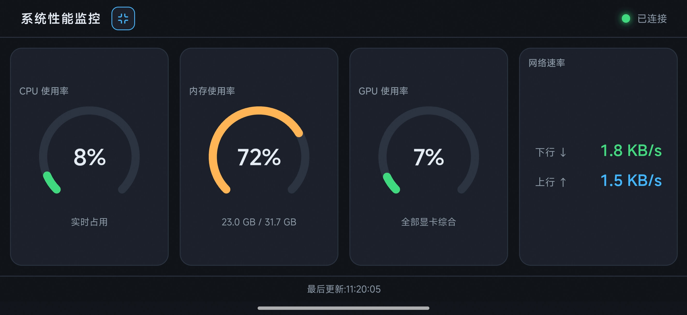

四项核心指标
CPU 使用率、内存占用、网络上下行速率、GPU 利用率，每秒 SSE 实时推送，仪表盘平滑刷新。
一个 exe / 二进制文件，零依赖开箱即用
CPU 使用率、内存占用、网络上下行速率、GPU 利用率，每秒 SSE 实时推送，仪表盘平滑刷新。
自动选取真实局域网 IP，过滤虚拟网卡。启动时控制台打印访问地址与二维码，手机扫码直达。
PC、手机竖屏、手机横屏均一屏展示无滚动条。支持默认全屏与一键切换，Canvas 高清自适应渲染。
Go 静态编译单文件约 6MB，运行时内存 10–20MB。前端内嵌 go:embed，无需外部文件或联网。
Windows 通过 PDH 性能计数器；macOS 通过 ioreg，Intel 与 Apple Silicon 均支持，无需 sudo。
支持自定义端口与采集间隔。-port 9000 -interval 2000 一行命令即可调整。
从桌面到移动端，随时随地掌握系统状态

用自然语言对话，从零到可用的完整产品
本项目全程采用 Vibe Coding 方式开发 —— 不写冗长规格书， 而是用自然语言与 AI 结对编程，在对话中逐步明确需求、做技术选型、 迭代优化，最终交付可运行的跨平台可执行文件与完整文档。
「写一个 Windows 性能监控 exe，仪表盘展示 CPU/内存/网速/GPU，内网可访问，尽量轻量。」
→ Go + gopsutil + SSE + go:embed 单文件方案「PC / 移动端 / 横屏都要一屏展示，不要滚动条。」
→ 100dvh + clamp 弹性布局 + Canvas 高清自适应「内网只显示真实 IP，并生成二维码；默认全屏 + 切换按钮。」
→ 默认路由探测 + qrterminal + Fullscreen API「支持 macOS x86 和 ARM，更新 README。」
→ gpu_darwin.go + 交叉编译 + 文档同步「生成 GitHub Pages 官网，介绍功能与 Vibe Coding 特性。」
→ 你正在看的这个页面最好的开发体验，不是写更多代码，而是说清你想要什么，然后看着它一步步长出来。
主流、轻量、零 CGO 依赖
.\windowsPerformance.exe双击运行，控制台显示本机与内网地址及二维码。
chmod +x ./sysperf-mac-arm64
./sysperf-mac-arm64Apple Silicon 用 arm64，Intel Mac 用 amd64 版本。
./sysperf -port 9000 -interval 2000浏览器打开 http://localhost:8080 即可查看仪表盘。
详细说明请参阅项目 README.md。 可从 GitHub Releases 下载各平台预编译二进制。